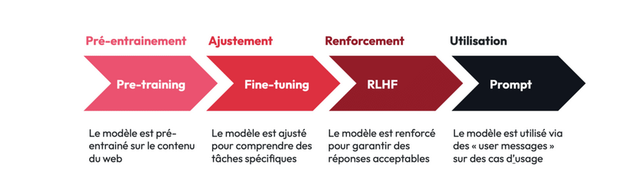
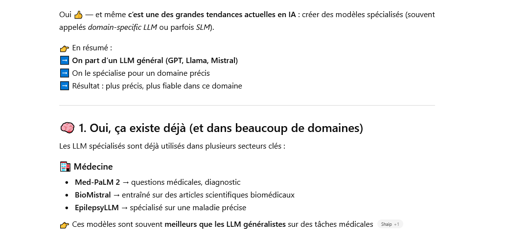
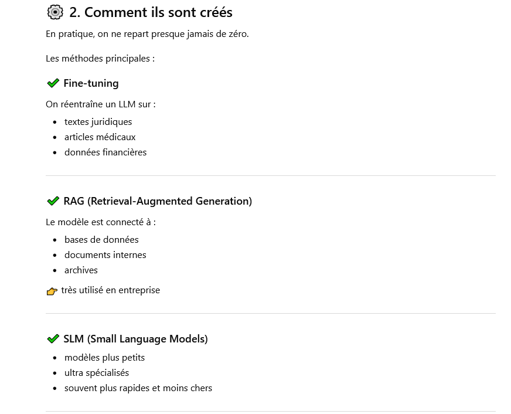
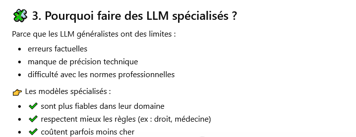
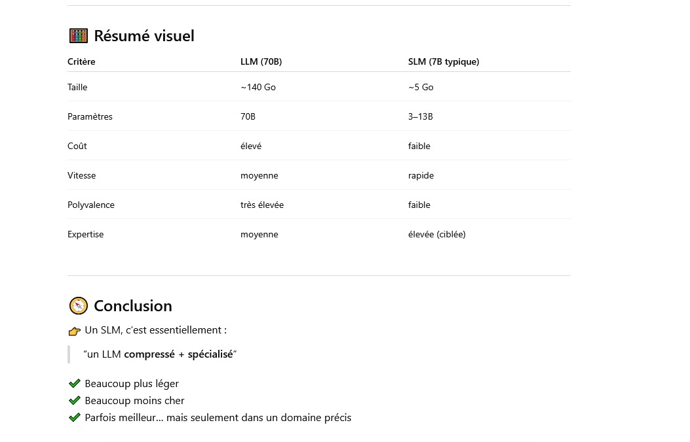

Les LLM (Large langage models)
Définition
Un grand modèle de langage (Large Language Model, LLM) est un type de programme d'intelligence artificielle (IA) capable, entre autres tâches, de reconnaître et de générer du texte. Large , en anglais grand , signifie que ce modèle est entrainé sur un nombre conséquent de données.
Un LLM est un modèle qui a emmagasiné suffisament d'exemples pour être ensuite capable de reconnaitre une conversation et la poursuivre .
Avant de se pencher sur le fonctionnement des LLm , un petit tour par l'hsitorique .
Histoire des LLM
Les débuts
Plutôt que de parler d'histoire, on pourrait évoquer la préhistoire des LLM dès les années 50 avec l'apparition des n-grammes : A la données d'un mot , on associe un nombre (n ici) de mots . Par exemple , au mot CHAT , on peut associer le trigramme : NOIR, SOURIS, MANGE. Ce sont des mots que le modèle va mobiliser dès qu'on lui parle de CHAT. On se doute que le n doit être très grand pour qu'il y ait une efficacité quelconque mais que même dans ce cas, la fluidité de la conversation n'est pas assurée. Cette approche statistiques n'est pas viable pour "une conversation cohérente".
Les Transformers , le tournant
Définition : Token
Token signifie jeton en anglais .Appliqué à l'IA ce mot signifie unité de données tratitée pour l'entrainement d'une IA
La technologie autour des transformers ( le T de transformers est le même que celui de GPT ;) apparu en 2017 a permis l'essor des LLM
La plus value du Transformer est énorme : Au lieu de traiter les mots un par un avec les techniques précédentes , on peut désormais considérer le texte en sa totalité, facilitant la compréhension de l'ensemble et la cohérence de la sortie proposée.
Depuis 2017, la technologie est restée la même mais a considérablement évolué en terme de capacités de calculs:
* Le modèle transformer est devenue plus efficace
* L'accès aux données est devenue encore plus massive
* La puissance de calculs a foirtement augmenté , notamment grâce à l'esssor des GPU
Définition : GPU
Un GPU est un processeur graphique dont le but premier est la création d'images et de videos. Mais sa forte puissance de calcul en fait un allié formidable pour les IA . Cette technologie a fait la fortune de la société Nvidia
Le premier modèle de LLm accessible au grand public est le fameux Chat GPT (3). S'il est révolutionnaire , il n'empêche qu'il présente pas mal de failles dans ses réponses (voir cours sur les biais).
Aujourd'hui les enjeux et les axes d'amélioration des LLM sont multiples :
- Amélioration des réponses
- Modèles plus spécialisés
- Aspect énergétique
- Alignement éthique
- Augmenter la part d'open source (Mistral, Llama)
Développement du modèle
Alors comment fonctionnent ces fameux LLM, eux qui semblent si humains quand on discute avec eux ?
On a vu plusieurs types d'apprentissage : Supervisé, auto supervisé , non supervisé .
Les LLm sont construits sur le modèle de l'apprentissage auto supervisé :
Définition : Apprentissage auto supervisé
Les modèles travaillent avec des données non étiquetées : C'est le modèle qui va construire sa vérité et non s'appuyer sur celles fournis par les programmeurs.
-
Le pré entrainement
Donc les LLM, à partir d'une immense quantité de données définissent "leur propre vérité. " On obtient ainsi un modèle qui est près à "discuter" , ou plutôt à prédire le mot suivant mais qui n'a pas été vérifié.
La technique
De façon sommaire , chaque texte à analyser est décomposé en token. A chaque token est associé sa position dans la phrase. C'est à ce moment qu'interviennent les transformers (et les mathématiques ;)) Au fur et à mesure de son apprentissage le modèle crée des relations entre les mots :
Exemple : L'homme se couvre car il a froid Le modèle va comprendre que il se rapporte à l'homme C'est ce que l'on appelle l'auto attention. Son but est de créer des relations pondérées entre tous les token On s'appuie sur trois vecteurs : La requête, la clé , la valeur :
La requête représente ce qu’un token donné « recherche », la clé représente les informations que chaque token contient, et la valeur « renvoie » les informations de chaque vecteur clé, mise à l’échelle par son poids d’attention respectif. Les scores d’alignement sont ensuite calculés en fonction de la similarité entre les requêtes et les clés. source : https://www.ibm.com/fr-fr/think/topics/large-language-models
-
Le fine tuning
Ici, on va dire que le modèle possède la technique mais ne sait pas l'utiliser : Il va être entrainé sur des 'tonnes" d'exemples , il apprend à distinguer les différentes taches : coder, traduire , résumer , répondre aux questions...
-
L'alignement
C'est ici que l'humain intervient de façon prépondérante : Il va indiquer aux modèles ses erreurs , ce qu'il attend de lui...L'idée est de le rendre plus sur, plus pertinent et d'éliminer le plus possible biais et hallucinations. On parle de RLHF (Reinforcement Learning from Human Feedback), technique associée à l'apprentissage par renforcement.
Est également utilisé le RAG (Retrieval-Augmented Generation) , technique qui permet de connecter le modèle à des bases de données actualisées: On peut ainsi enrichir le modèle sans pour autant le re-entrainer , diminuant ainsi coût et impact écologique .

https://www.followtribes.io/performances-llm-puissance-gpu-parametres-dataset/Un excellent article développant les notions effleurées ci dessus
Et une video récapitulative:
Taille des modèles
On imagine bien que pour être très performant, un modèle devra avoir ingurgité une quantité phénomènale de données .
La puissance d'un llm dépend de trois facteurs :
- La quantité de data pour l'entrainement
- Le nombre de paramètres qu'il intégre
- La puissance de calcul des GPU utilisés
Bien évidemment, le principal souci est d'ordre écologique, ces modèles consommant beaucoup et nécessitant d'être refroidis (conso d'eau non négligeable , voir le cours sur l'IA et l'écologie )
Les tailles des modèles vont de quelques millions de paramètres à plusieurs milliards.
Une tendance actuelle consiste , à partir des Llm , à créer des SLM (small langage model) spécialisés
Par exemple, à partir d'un LLM généraliste , on peut entrainer un sous modèle sur un thême précis , mettons le domaine juridique .
Et voici ce qu'il ressort avec chat gpt à partir du prompt :
Existe il des sml spécialisés dans certains domaines créés à partir de llm ?
Réponse d'un LLM :



Et en conclusion :
Comparaison des modèles

Remarque 70B c'est 70 billions en anglais soit 70 milliards de paramètres.
Sources
Pour construire cette page , je me suis appuyé sur deux excellents sites :
Celui d'IBM, très pointu et très complet dans son approche de l'IA.
Le site de Stephane Robert est aussi une mine pédagogique .
Il existe quantité d'ouvrages sur l'IA, tous présentant le défaut d'être quasi obsolète avant de sortir . Pour autant, L'intelligence artificielle pour les nuls a l'avantage de sprésenter des notions 'intemporelles' si l'on peut dire, de façon claire, concise et précise . C'est déjà beaucoup.
Enfin, en adepte de la récursivité , je me suis appuyé sur deux LLm : Chat GPT 4 et Perplexity, intégré au navigateur Comet.
Last but nos least, ce bon vieux wikipedia n'est jamais bien loin.